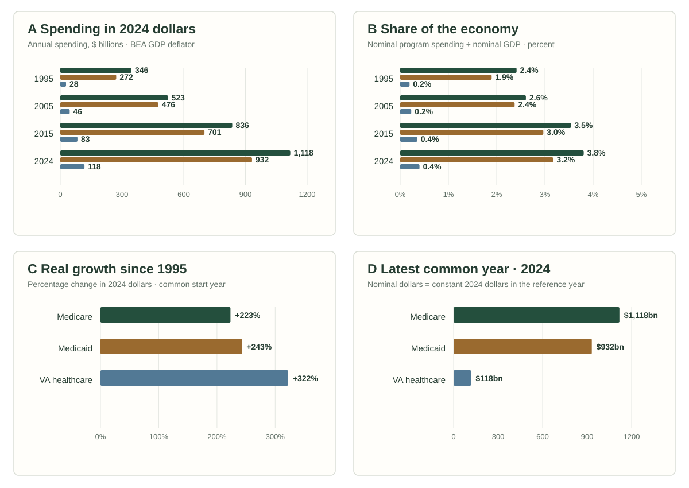

Independent healthcare research and writing by Rob McConeghy.
New England healthcare landscape
Primary care across New England
Primary care physicians per 10,000 residents
FewerMore
Map scale capped at 20.8
New England aggregate
14.2
PCPs per 10,000 residents
Lowest supply
- Grand Isle, VT
- 4.0
- Nantucket, MA
- 4.1
- Franklin, VT
- 5.3
Highest supply
- Suffolk, MA
- 50.5
- Cumberland, ME
- 20.8
- Chittenden, VT
- 20.5
68 counties and county-equivalents · 2024 ACS population
Explore the analysis and methods →

Three public programs, three very different scales
Medicare, Medicaid, and VA healthcare spending · 1995–2024

Earlier research and teaching
Selected publications and teaching from my work before White Oak Research.
- Frailty and hospital delirium
Coauthor of research on frailty and delirium in hospitalized veterans.
- Comparative effectiveness research methods
Coauthor of a synthesis comparing recommendations across nine research methods guides.
- Teaching Power BI for healthcare reporting
Live tutorials on reporting and dashboard development for national Money Follows the Person meetings.